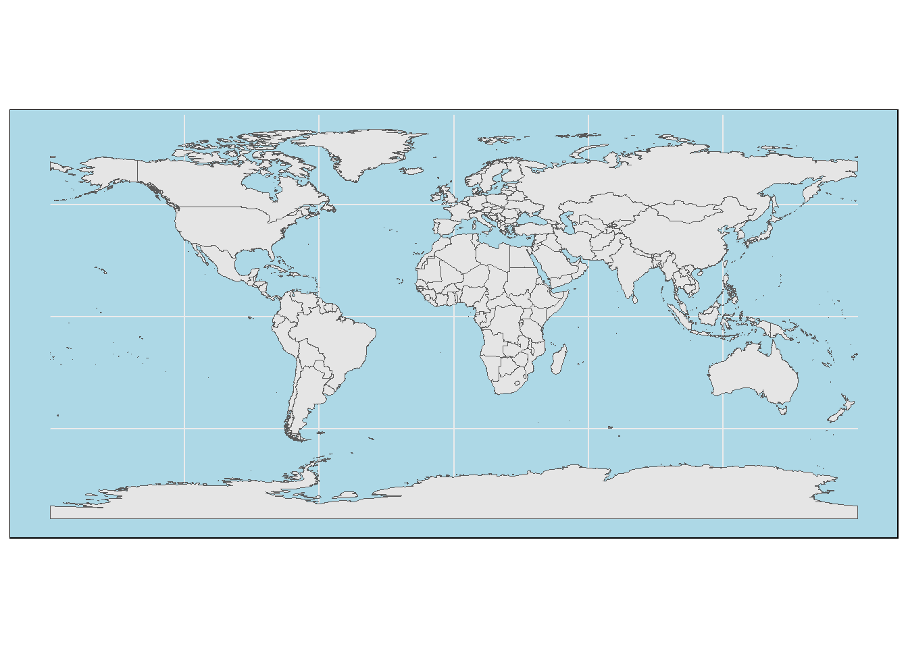

2.3 What is the timeline of world cup hosting?
What was missing from the previous representation of the data is the time component. In this section we’ll explore a visualization method that would allow us to add this crucial aspect.
Let’s start by preparing the hosting data for visualization by filling in the gap years where the world cup stopped due to WWII
#add missing years in which world cup was cancelled
df_tm <- df_host %>%
complete(year = full_seq(year, 4)) %>%
mutate(continent = ifelse(is.na(continent), "Cancelled", continent),
host_nation_s = ifelse(is.na(host_nation_s), "Cancelled", host_nation_s))
#make a 6x5 grid from the hosting data and add the coordinate of each cell in the grid
df_tm <- df_tm[1:30,] %>%
mutate(y = rep(6:1, each = 5),
x = rep(1:5, 6),
host_nation_s = case_when(
str_detect(host_nation_s, "Canada") ~ "Canada\nMexico\nUnited States", #add a new line between cohosts
str_detect(host_nation_s, "Japan") ~ "Japan\nSouth Korea", #add new line between cohosts
TRUE ~ host_nation_s),
continent = factor(continent, levels = unique(continent))) %>%
filter(!is.na(continent))Let’s use chronologically ordered tiles (AKA waffle plot) to look at the timeline of hosting the world cup.
df_tm %>%
ggplot(aes(x, y, fill = continent ))+
geom_tile(color = "black", size = 1)+
geom_text(aes(label = host_nation_s), size = 4.5)+
scale_color_manual(values = conti_cols)+
scale_fill_manual(values = conti_cols)## Warning: Using `size` aesthetic for lines was deprecated in ggplot2 3.4.0.
## ℹ Please use `linewidth` instead.
That’s a good start! Let’s add the year information and further beautify the plot.
df_tm %>%
ggplot(aes(x, y, fill = continent ))+
geom_tile(color = "black", size = 1)+
geom_text(aes(label = host_nation_s), size = 3.1)+
#add the time interval of each row
geom_text(data = . %>%
group_by(y) %>%
mutate(range = glue::glue("({min(year)}-{max(year)})")) %>%
ungroup(),
aes(label = range),
x = -0.5,
size = 3)+
scale_x_discrete(expand = expansion(add = 2))+
guides(fill = guide_legend(nrow = 1))+
labs(title = "History of hosting FIFA world cup",
subtitle = "Host countries of world cups chronologically orderd and colored by continent",
caption = caption_cdc)+
coord_fixed(0.7)+
scale_color_manual(values = conti_cols)+
scale_fill_manual(values = conti_cols)+
theme(title = element_text(size = 10),
axis.line = element_blank(),
axis.ticks = element_blank(),
axis.text = element_blank(),
axis.title = element_blank(),
legend.position = "top",
panel.border = element_rect(linewidth = 2,linetype = "solid", color = "black")) This is a condensed and clear representaion of our data, which are two desirable features of data visualization.
This is a condensed and clear representaion of our data, which are two desirable features of data visualization.
Let’s go from compactness to vastness by throwing this data on the world map and see how it would look like
#get map of the world
world <- ne_countries(scale = "medium", returnclass = "sf")
#and map of separate host countries
hst_cntry <- df_host$host_nation_s %>%
unique() %>%
str_split(" \\s") %>%
unlist()
wcp_hosts <- gisco_get_countries(country = hst_cntry,
epsg = 3857# Pseudo-Mercator projection
)
# Convert country name to iso2c code
wcp_hosts$iso2 <- countrycode(wcp_hosts$ISO3_CODE, "iso3c", "iso2c")Plotting base map of the world using ggplot.
# Base map of the world
plot <- ggplot(world) +
geom_sf(fill = "grey90") +
theme_minimal() +
theme(panel.background = element_rect(fill = "lightblue"))Additionally, let’s make the map extra flashy by filling hosting countries with their maps.
# get flags form this repo
flagrepo <- "https://raw.githubusercontent.com/hjnilsson/country-flags/master/png250px/"Finally, we’ll download and add flags to the world map
# Loop and add
for (iso in wcp_hosts$iso2) {
# Download pic and plot
imgurl <- paste0(flagrepo, tolower(iso), ".png")
tmpfile <- tempfile(fileext = ".png")
download.file(imgurl, tmpfile, quiet = TRUE, mode = "wb")
# Raster
x <- wcp_hosts %>% filter(iso2 == iso)
x_rast <- rasterpic_img(x, tmpfile, crop = TRUE, mask = TRUE)
plot <- plot + layer_spatial(x_rast)
}
plot +
geom_sf(data = wcp_hosts, fill = NA)+
labs(title = "World map of FIFA world cup hosts")
Have a look at this blog for more details on adding flags to maps https://www.youtube.com/watch?v=6I5I56uVvLw&ab_channel=AndrewHuberman This is where I got to know and learn this trick.